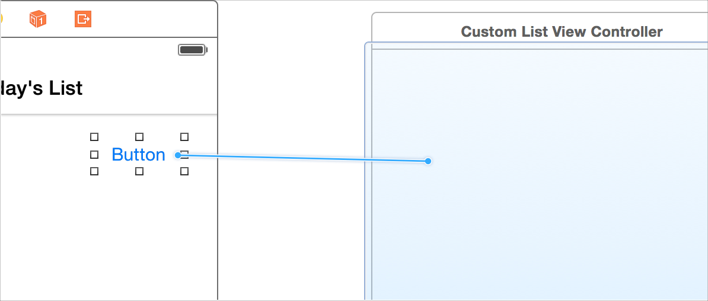
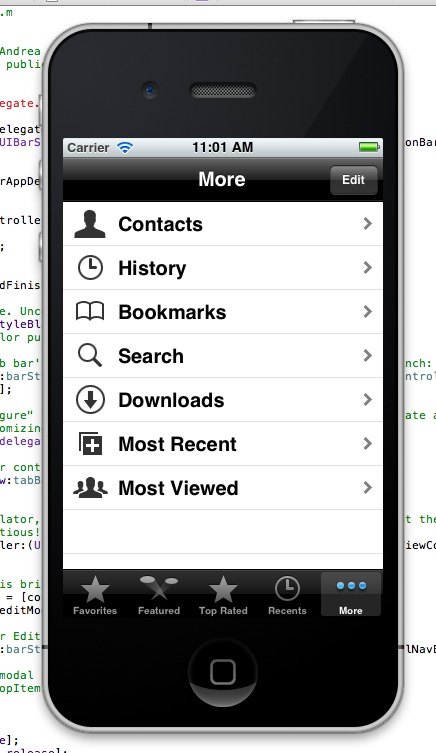
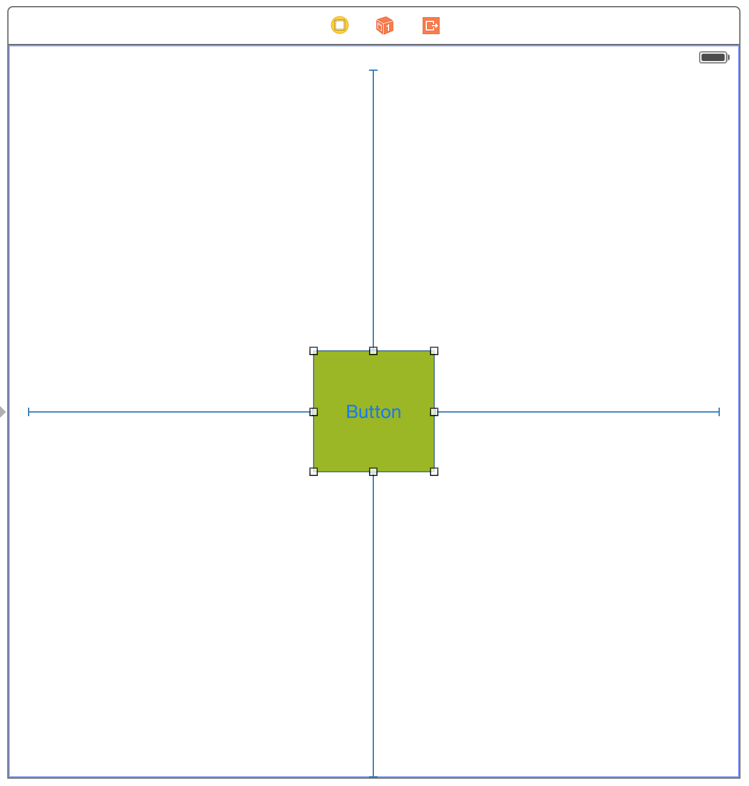
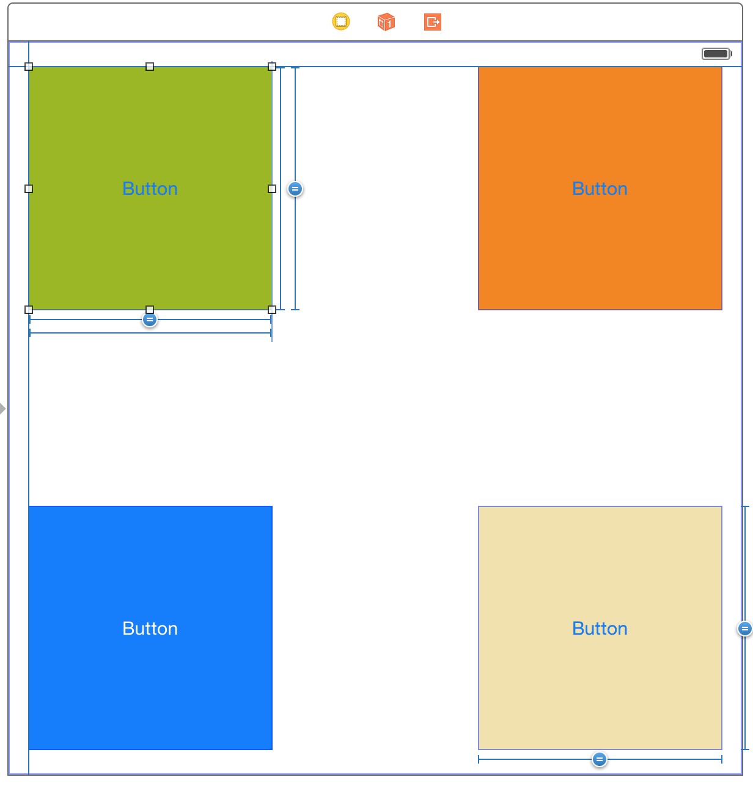
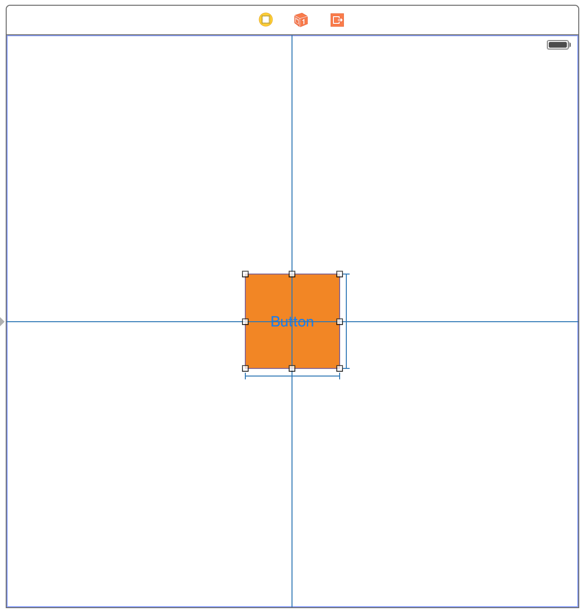
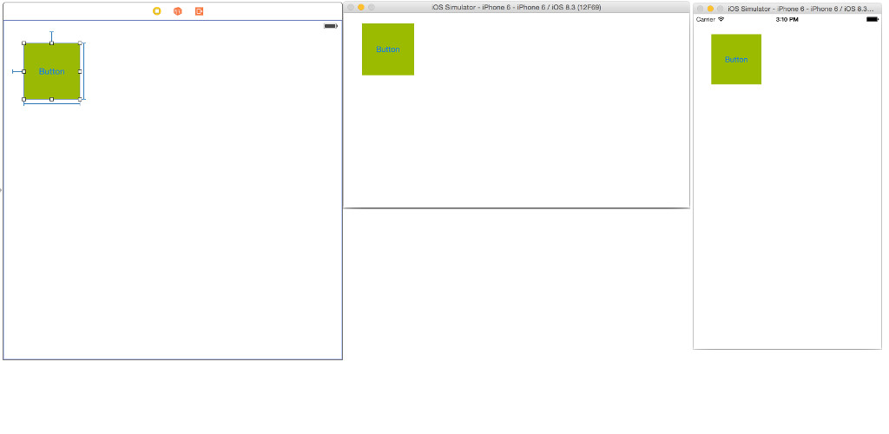
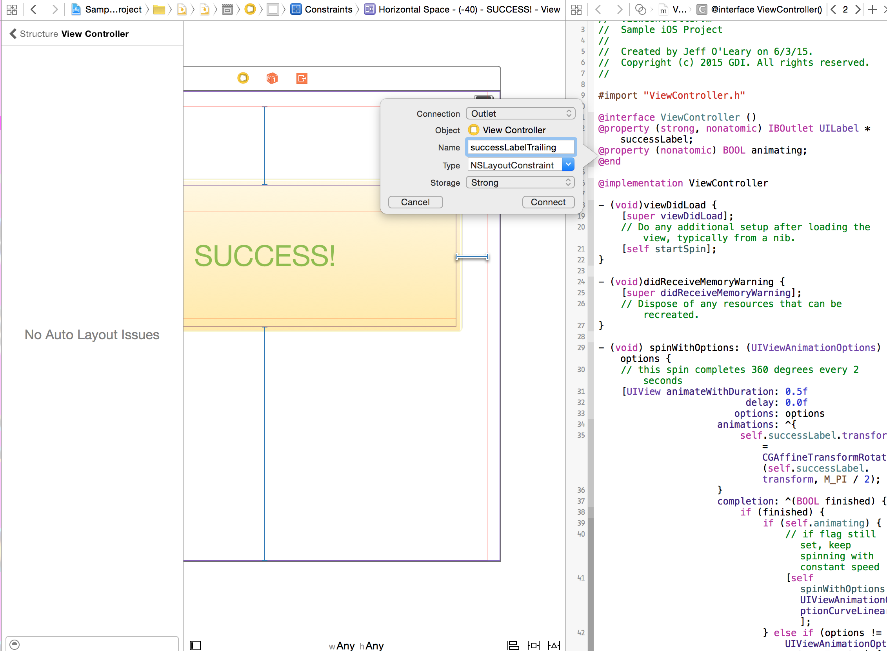
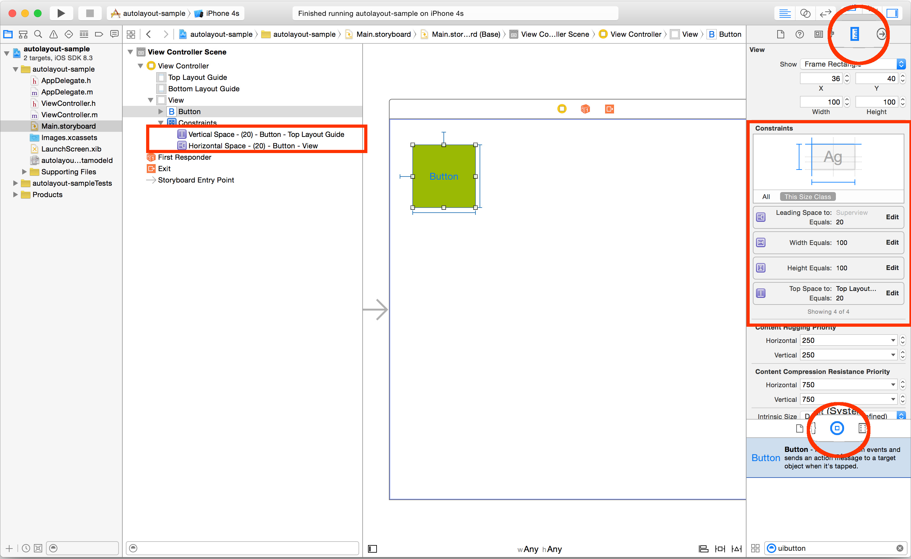

Install Xcode
Head on over to: https://developer.apple.com/xcode/downloads/
To ensure Xcode was installed properly, open your terminal and run
xcode-select -pYou should see
/Applications/Xcode.app/Contents/Developer
CocoaPods
Manages library dependencies for Xcode projects
Dependencies are specified in a single text file called a Podfile
Resolves dependencies between libraries, fetches the required source code and links everything together in an Xcode workspace to build your project
Reference:
https://guides.cocoapods.org/using/getting-started.html
Installing CocoaPods
Open Terminal and enter:
sudo gem install cocoapods
NOTE: CocoaPods is built with Ruby and it will be installable with the default Ruby available on OS X
Let's run a sample app
Download the sample app
http://bit.ly/gdi-sample-ios-app
Navigate to your project's folder
In Terminal, where the directory the Podfile is located, run the following:
pod install
Now open the xcworkspace
open Sample\ iOS\ Project.xcworkspace/
Introduction to iOS App Development
First Class
Elliot Schrock
Agenda
How this course will be taught
Motivation
Introduction to programming fundamentals
Tour of Xcode
Introduction to MVC
This course
1 class = 1 instructor
Misunderstanding = our fault
Please please PLEASE ask questions
gdi.ios.anonymous.question@gmail.com
My email: elliot.schrock@gmail.com
Let students write it down!
Why should I care about programming?
It's MAGIC!
It is the closest us muggles have to being wizards
Think about mobile: spells for finding things, bringing them to you, turning on/off lights, info from one person to another
Like anything in the wizarding world, it takes precision
VIDEO
List of Commands
Each command is like a spell
it has to be right or you'll stab an eye out
Generally one command per line:
[someObject doSomething];
[anotherObject doSomethingElse];
someObject.someProperty = anotherProperty;
Build up these commands into 'objects'
Object Oriented Programming (OOP)
Create 'objects' that do things
"Create" (write code describing)
In OOP, (almost) everything is an object
"OOP" specifically Obj-C. In fact, how many have heard of C? "Objective" C is an object oriented version of C (kind of)
Description of:
What the object can do
What other objects it owns
Write this description in its own file (kind of)
Examples
Dog
Has: collar, tail, tongue, legs, nose, ears, Can: walk, run, pant, bark
Pen
Has: a cap, a grip, a tip, ink Can: make a mark
Arm
Ask the class for examples of properties and functions
Objects
Type of object = Class
The object itself = instance
Give example: Chair class is a description of all chairs; this chair right here is an 'instance' of that class
Uppercase vs lowercase
Properties
Access a property using a 'dot'
arm.hand;Can even chain them together:
arm.hand.pinkieFinger;
Functions
Functions = actions
Tell an object to do something with brackets:
[hand open];They can be given some number of things (called 'arguments'):
[student takeThisPen:pen]; [student putThisInkCartridge:cartridge intoThisPen:pen];Or they can be combined with properties:
[arm.hand.pinkieFinger wiggle];
Defining a function
- (void)openFunctions with arguments:
- (void)takeThisPen:(Pen *)thisPen
{
myPen = thisPen;
}- (void)putInkCartridge:(InkCartridge *)myCartridge intoPen:(Pen *)myPen
{
myPen.cartridge = myCartridge;
}Functions can 'return' things:
- (Pen *)giveMeYourPen
'=' means make the thing on the left equal to what's on the right.
'Pen' is the type of object.
'thisPen' is the name of the object.
You could name it something other than 'thisPen'. 'Mac'? Example: Gwyneth Paltrow's child is named 'Apple' ...You can do that, it's just weird
(please name things logically!)
We'll get into this more later
Putting it all together
- (Pen *) pen: (Pen *)myPen withInkCatridge: (InkCartridge *)myCartridge {
[myPen open ];
myPen .inkCartridge = myCartridge ;
[myPen close ];
return myPen ;
}
Hand.h
h stands for 'header'
Lots here you aren't supposed to understand, just don't want to show you something wrong.
Just incantations
#import <Foundation/Foundation.h>
#import "Finger.h"
@interface Hand : NSObject
@property (nonatomic, strong) Finger *indexFinger;
@property (nonatomic, strong) Finger *middleFinger;
@property (nonatomic, strong) Finger *ringFinger;
@property (nonatomic, strong) Finger *pinkieFinger;
- (void)open;
- (void)close;
@end
Go through each line again
Arm.h
#import <Foundation/Foundation.h>
#import "Hand.h"
@interface Arm : NSObject
@property (nonatomic, strong) Hand *myHand;
- (void)extend;
- (void)retract;
@end
Go through each line and explain:
@interface = how to "interface" with Arm objects
property (incantation, incantation) an object of class Hand, named hand
two functions that return nothing and take no arguments
Exercise
#import <Foundation/Foundation.h>
#import "Hand.h"
@interface Arm : NSObject
@property (nonatomic, strong) Hand *myHand;
- (void)extend;
- (void)retract;
@end#import <Foundation/Foundation.h>
#import "Finger.h"
@interface Hand : NSObject
@property (nonatomic, strong) Finger *indexFinger;
@property (nonatomic, strong) Finger *middleFinger;
@property (nonatomic, strong) Finger *ringFinger;
@property (nonatomic, strong) Finger *pinkieFinger;
- (void)open;
- (void)close;
@end
Here are the .h files for both classes. Walk through creating them in Xcode. Now let's implement the following together... (next slide)
Exercise Function
- (void)pickUpPen:(Arm *)anArm
{
}
Demonstrate this function physically, the walk through writing it in Xcode.
A Solution
- (void)pickUpPen:(Arm *)anArm
{
[anArm.hand open];
[anArm extend];
[anArm.hand close];
[anArm retract];
}
Exercise Function
- (void)putDownPen:(Arm *)anArm
{
}
Have them implement this on their own, and play Harry Potter theme in the background
A Solution
- (void)putDownPen:(Arm *)anArm
{
[anArm extend];
[anArm.hand open];
[anArm retract];
[anArm.hand close];
}
Implementation
Header (.h) = how others interact with an instance.
Implementation (.m) = what happens when they do.
Recall pickUpPen. In the header:
#import <Foundation/Foundation.h>
@interface Arm : NSObject
- (void)pickUpPen:(Arm *)anArm;
@endIn the implementation:
#import "Arm.h"
@implementation Arm
- (void)pickUpPen:(Arm *)anArm {
[anArm.hand open];
[anArm extend];
[anArm.hand close];
[anArm retract];
}
@end
Self
The "self" keyword refers to the current instance
Example: rewrite of pickUpPen:
#import "Arm.h"
@implementation Arm
- (void)pickUpPen
{
[self.hand open];
[self extend];
[self.hand close];
[self retract];
}
@end
A Short Digression: Memory
Instances are stored in memory (RAM)
RAM = random access memory. Means there's no plan for where something will be. (This is slightly more complicated than what I'm describing)
Each instance has an address in memory
That address is how the computer refers to the object
The Dentist Example
I am an instance of the class person. I have a dentist. Sometimes, that dentist will change.
I have a contact in my phone called 'Dentist'
Move to a new city, need a new dentist
Find a new one and replace the old dentist's phone number with the new one
- (void)setDentist:(Dentist *)newDentist
{
self.myDentist = newDentist;
}
This is how equals works - I'm replacing the address I have in self.dentist by the address stored in newDentist
Variables
Create a variable like so:
Dentist *myDentist;
right now, nothing in it. empty bucket. no object in it... kind of
Right now, dentist is equal to nil
nil is the nothing object. lot of neat properties, but specifically, if you try to call a function it won't do anything, or it will return nil
Usually we'll instantiate the object at the same time as we create the variable:
Dentist *myDentist = [[Dentist alloc] init];
lot to unpack here. Should recognize left side. Should recognize brackets. Alloc = allocate memory. Init = initialize
also note, variables and functions start with lowercase. classes = uppercase
PM me on Slack with how to create a variable of class Arm named someonesArm
Arm *someonesArm = [[Arm alloc] init];
Person
Have them create this class. Should have an NSString *name (so explain some of those NS classes), and maybe an arm?, phone #?
Scope
Variables have a shelf life
scope is basically how long it will last. if variables are buckets to hold things, you only have so much room in your house. at some point, you'll have to get rid of some. that's scope, more or less: rules that determine how long a variable is valid for.
Scope of a variable is where it is valid
- (void)setDentist:(Dentist *)newDentist
{
self.myDentist = newDentist;
}
What happens when dentist office has no patients: if closes. Same thing with variables: when no one is using it, get rid of it. Variable 'newDentist' is the paper on which the phone number is stored on. Once it's copied into self.dentist, don't need newDentist any more. Scope: can only use newDentist in that one function. (Explain where this is happening? That is, the implementation file?)
- (void)makeAppointmentWithDentist
{
DentistAppointment *appointment = [[DentistAppointment alloc] init];
appointment.dentist = self.myDentist;
appointment.patient = self;
[appointment confirm];
}Rule of thumb: only valid between the curly braces in which it was born
Primatives
keep saying 'almost' everything is an object. primatives are not object. so small, they don't need pointers.
int - integers
BOOL - boolean values (YES and NO)
float - decimal numbers
Don't need * because not an address
Math operations work as you'd expect:
int myLuckyNumber = 5 + 4;
myLuckyNumber = 86 - 77;
myLuckyNumber = 3 * 3;
myLuckyNumber = 81 / 9;
myLuckyNumber = 103 % 47;
Exercise
Let's write a function that adds two integers together and returns the result.
- (int)add:(int)firstNumber to:(int)secondNumber
{
return firstNumber + secondNumber;
}
create a Utility class in which to implement this. Then do so.
Now you: write a function that subtracts one int from another and returns the result.
Booleans
Recall that BOOL is a boolean value (either YES and NO)
introduce a few things at once. if/then, and boolean operations
int myLuckyNumber = 9;
if (myLuckyNumber == 7){
//do something only if myLuckyNumber is 7
} int myLuckyNumber = 9;
if (myLuckyNumber != 7){
//do something only if myLuckyNumber is NOT 7
}
Subclassing
Add functionality to a class by subclassing it (extending it)
It 'inherits' all the functions of its super class
Plus you can add your own functions
Suppose I have a class called Automobile
Automobile has wheels, a driver's seat, can brake, can accelerate...
#import "Automobile.h"
@interface Truck : Automobile
@property (nonatomic, strong) FlatBed *theFlatBed;
- (void)haul:(NSObject *)something;
@end
this is actually what we've been doing all along: all classes so far have subclassed NSObject.
Real Live App
https://github.com/schrockblock/boston-ios
Download zip, extract it
Run pod install
Open the workspace
this is app is not my best work, but it'll do. run it, show that what it does. open finder and show all the files. this is why we need mvc. explain mvc.
Homework
https://github.com/schrockblock/gdi-homework-1
I accidentally deleted a class! Use Xcode to figure out which one, and re-create it so that the project runs.
Introduction to iOS App Development
Second Class
Vineet Sathyan
My email: vineet.sathyan@gmail.com
Brief introduction + reminder to please continue to ask questions. Last class we did great.
Agenda
Introduction to MVC
Basic Tour of Xcode
Basic User Interface
Programming Basics cont.
Switching to UI to get a breather from pure coding and then we will come back to it :).
Model
objects that store data
stores the current 'state' of the application
Database : CoreData, sqlite, etc.
NSObjects
What we implemented- ask a question after MVC is introduced.
View
User Interface : what the user sees
views, buttons, labels
What we implemented- ask a question after MVC is introduced.
Controller
'controls' views and models
UIViewController
UITableViewController, UINavigationController, custom
acts as the intermediary between models and views. models and views should never be aware of each other.
Xcode
IDE
Menu Items
Quick Help
Interface Builder
Don't want to overwhelm, just pointing out a few helpful things for right now. And we will learn more as we go.
Interface Builder
allows you to design a user-interface without writing any code.
Live Example
Lots of 'drag and drop'
make a new project, add a label, connect the label to a IBOutlet, then output custom text to that label.
Add a button, conect it to IBAction, change the text of that label.
UIViews
UIView
basic canvas of the view hierarchy.
holds subviews- any sort of views: UIViews, label, buttons, images, etc.
Handles interactions and layout of all its subviews
UILabel
UIButton
UIImageView
add an image to the project, add a UIImageView, load the UIImageView with the image resource object.
Calculator
Make a simple calculator
make all the buttons for a simple integer calculator and connect them to the controller
+ - , 0-9, = , output Label
Optional Homework- extend the calculator.
to implement multiplying, dividing, decimal points, "stack" of operations
Programming Basics cont.
Previously
went over objects, Class, instance, properties, variables, primitives, functions, scope, alloc, init.
Today
arrays
dictionaries
constants
loops
NSArray
Inherits from NSObject
array = [1,2,3,4,5]
ordered collection of objects
Mutable?
list of items in order. show live code
NSDictionary
Inherits from NSObject
dictionary = { name : Arya, pet : Nymeria, sword: Needle }
keys and values
Mutable
objects associated with keys, very common in API's passing information back and forth.
Constants
Primitives
NSString
useful to declare constants which will never change in the application (name, Text, number, etc).
Loops
For-loop
While - loop
for now just focusing on those. Helps perform action, functions on a collection of objects.
Be careful to avoid infinite loops.
Homework/Classwork
https://github.com/vsathyan/IB-example
https://github.com/vsathyan/Calculator
Build out each project more
Agenda
Quick refresher
Navigation
Break time!
Auto Layout
Goals
What is a navigation stack
Who coordinates and controls navigation
How to navigate throughout an app
What is Auto Layout
What is the benefit of Auto Layout
How do I use Auto Layout
The goal of this class is by the end of the night, you will understand...
Goals
If these goals aren't met, I'm doing something wrong. Please help me be a better teacher, ask any and all questions!
Any follow up questions or clarification, feel to use the anonymous email provided - gdi.ios.anonymous.question@gmail.com
my email - joleary1987@gmail.com
Xcode has tons of panels and toolbars
Here is a great cheat sheet reference that provides a thorough tour of Xcode in just a few slides
http://bit.ly/1BcjmI5
(will put it in Slack chat as well)
What we've already covered
Objects
Class vs. Instance
Properties vs. Functions
Subclasses
We'll be going over these core concepts and how they apply to what we'll be learning tonight.
Class is like a "type" of something, the instance is an object of that Class or "type". Properties are something an instance HAS while functions are something an instance DOES. Subclasses for example, UILabel is a subclass of UIView. A subclass inherits everything from its parent class and more can be added to it.
Navigation
Navigation Interface
UINavigationController
StoryBoard Segues
UITabBarController
The views of a navigation interface
UIWindow class (window in the image) provides an area for displaying an app's views and to distribute events to the views.
Usually, an app has only one window and the window contains a root view controller which is the first view controller in the navigation stack.
The navigation view here is the part of the UINavigationController and can send events to the navigation controller.
The tab bar view is part of the UITabBarController and can send events to the tab bar controller.
^^All provided by iOS and customizable, however, the positioning of where they are layered should not be altered.
Lastly, there are the views you have created and can navigate to/from.
UINavigationController
UINavigationController creates and is responsible for the navigation bar and tool bar. The navigation controller sets itself as the navigation bar's delegate so it can receive messages such as, "back button touched."
The navigation controller manages the navigation stack, which is a "last-in, first-out" collection of custom view controller objects. The first item added to the stack becomes the root view controller which never gets 'popped' off the stack.
The navigation controller’s primary responsibility is to respond to user actions by pushing new content view controllers onto the stack or popping content view controllers off of the stack.
Each content view controller in the stack configures and pushes the content view controller that is on top of it in the stack.
The navigation controller provides a back button on the navigation bar that pops the topmost view controller automatically when the user taps it.
Creating a navigation interface in code:
- (void)applicationDidFinishLaunching:(UIApplication *)application
{
UIViewController *myViewController = [[MyViewController alloc] init];
UINavigationController *navigationController = [[UINavigationController alloc] initWithRootViewController:myViewController];
self.window.rootViewController = navigationController;
[self.window makeKeyAndVisible];
}
First line, we allocate and initialize our main view controller. Then, we set the main view controller as the root view controller (the very first viewcontroller in the navigation stack) while we allocate and initialize our UINavigationController.
Next, we take our app's UIWindow, which is provided to us by Xcode when we create our app and set the root view controller as the navigation controller. Doing this allows the navigation controller access to the window's navigation stack. Think of the outline of your screen as the window.
The UIWindow class defines an object known as a window that manages and coordinates the views an app displays on a device screen. Unless an app can display content on an external device screen, an app has only one window.
"makeKeyAndVisible" - This is a convenience method to make the receiver the main window and displays it in front of other windows at the same window level or lower. You can also hide and reveal a window using the inherited hidden property of UIView.
User selects an item from a list and expects a detailed view of that item
UIViewController *itemDetailViewController = [UIViewController alloc] init];
[self.navigationController pushViewController:itemDetailViewController animated:YES];
User wants to return to the previous screen
(If the user used the back button, the navigation controller would do that for us)
[self.navigationController popViewControllerAnimated:YES];
Back up farther than the last screen
Pop every view in the stack until you reach the root view controller
[self.navigationController popToRootViewControllerAnimated:YES];
Remove a number of view controllers at a time
[self.navigationController popToViewController:viewControllerPositioned4thIntheStack animated:YES];
First example, removes all but the root view controller from the navigation stack.
Second example, use to back up more than one level at a time, use the popToViewController:animated: method. You might use this method in situations where you use a navigation controller to manage the editing of custom content (rather than presenting content modally). If the user decides to cancel the operation after you have pushed multiple edit screens, you can use this method to remove all of the editing screens at once, rather than one at a time.
The view controller that you want to be at the top of the stack. This view controller must currently be on the navigation stack.
Using UIViewController methods to display new screens
Display a new view controller over the current view controller's content
[self presentViewController:viewControllerToDisplay animated:YES completion:nil];
Then dismiss it
[self dismissViewControllerAnimated:YES completion:nil];
StoryBoard Segues
The simplest way to create and facilitate navigation throughout an iOS app
All in one place! No code needed! Wow!
Storyboards allow adding a button to one view controller within the storyboard and control-select-dragging from that button to another view controller within the same storyboard. This connects the two view controllers through a segue. There are different options as to how the next view controller is displayed.
How to add segues in the StoryBoard
Our pal "control+select+drag" is back and ready to make it happen!

We have seen the control+select+drag action before to create our Interface Builder outlets for our buttons, labels and other subclasses of UIView. We can also use the control+select+drag to make segue connections between UIViewControllers within the same StoryBoard.
Types of Segues
Show
Show Detail
Present Modally
Popover Presentation
Custom
Show - Pushes the destination view controller onto the navigation stack, moving the source view controller out of the way (destination slides overtop from right to left), providing a back button to navigate back to the source - on all devices
Example: Navigating inboxes/folders in Mail
Show Detail - Replaces the detail/secondary view controller when in a UISplitViewController with no ability to navigate back to the previous view controller
Example: In Mail on iPad in landscape, tapping an email in the sidebar replaces the view controller on the right to show the new email
Present Modally - Presents a view controller in various different ways as defined by the Presentation option, covering up the previous view controller - most commonly used to present a view controller that animates up from the bottom and covers the entire screen on iPhone, but on iPad it's common to present it as a centered box overtop that darkens the underlying view controller and also animates up from the bottom
Example: Tapping the + button in Calendar on iPhone
Popover Presentation - When run on iPad, the destination appears in a small popover, and tapping anywhere outside of this popover will dismiss it. On iPhone, popovers are supported as well but by default if it performs a Popover Presentation segue, it will present the destination view controller modally over the full screen.
Example: Tapping the + button in Calendar on iPad (or iPhone, realizing it is converted to a full screen presentation as opposed to an actual popover)
Custom - You may implement your own custom segue and have control over its behavior.
Let's take a look at an example
https://github.com/joleary1987/autolayout-example
Open autolayout-sample Xcode project and show how to add another UIViewController, add a button to a previous UIViewController and how to connect them via Segue outlet (control+select+drag)
Display a new view controller over the current view controller's content
Each tab of a tab bar controller interface is associated with a custom view controller. When the user selects a specific tab, the tab bar controller displays the root view of the corresponding view controller, replacing any previous views.
You should never access the tab bar view of a tab bar controller directly. To configure the tabs of a tab bar controller, you assign the view controllers that provide the root view for each tab to the viewControllers property.
The order in which you specify the view controllers determines the order in which they appear in the tab bar. When setting this property, you should also assign a value to the selectedViewController property to indicate which view controller is selected initially. (You can also select view controllers by array index using the selectedIndex property.)
Tab bar items are configured through their corresponding view controller. To associate a tab bar item with a view controller, create a new instance of the UITabBarItem class, configure it appropriately for the view controller, and assign it to the view controller’s tabBarItem property. If you do not provide a custom tab bar item for your view controller, the view controller creates a default item containing no image and the text from the view controller’s title property.
If you assign a value to this view controller’s restorationIdentifier property, it preserves a reference to the view controller in the selected tab. At restore time, it uses the reference to select the tab with the same view controller.
Creating and setting the view controllers for each tab in code
UIViewController *firstTabViewController = [[UIViewController alloc] init];
UIViewController *secondTabViewController = [[UIViewController alloc] init];
UIViewController *thirdTabViewController = [[UIViewController alloc] init];
UIViewController *fourthTabViewController = [[UIViewController alloc] init];
UITabBarController *tabBarController = [[UITabBarController alloc] init];
tabBarController.viewControllers = @[firstTabViewController,
Here, we are allocating and initializing (4) UIViewControllers and (1) UITabBarController. viewControllers is a property of type NSArray on the UITabBarController class. We can use the following syntax to declare an array full of our view controllers.
Creating and using UITabBarControllers in Interface Builder
Move to Xcode and open the autolayout-sample project. Add a UITabBarController to main.Storyboard, add button to initial view controller to move to UITabBarController and add labels to item 1 and item 2 view controllers.
Tab bars have very limited space on the screen...
UITabBarController provides a "more" button solution

The tab bar has limited space for displaying your custom items. If you add six or more custom view controllers to a tab bar controller, the tab bar controller displays only the first four items plus the standard More item on the tab bar. Tapping the More item brings up a standard interface for selecting the remaining items.
What is it?
A system to create mathematical relationships between items within the view (or "subviews") and items in relation to the parent view itself. It is similar to responsive web
How does it help me?
Items within the view reposition and/or resize based on our predetermined constraints. Auto Layout removes the need to code for every current and future screen size.
Adding layout constraints using Interface Builder
Select the view you want to add constraints to
View constraints include height, width, leading space, trailing space, top space and bottom space. These constraints can be applied to single items, multiple items either. Constraints can be in reference to other child views or the superview itself.
Auto Layout also includes Horizontal Center and Vertical Center in the item's container. Multiple items can be selected and have equal widths or heights applied to all so each item's width or height is the same.
Leading, trailing, top and bottom constraints

Equal heights and widths constraints

Center horizontally and vertically

Example

In this example, the button's height and width constraints are set. The leading and top constraints are set to 20 points. This will cause the button to always be position at the top left of the screen, regardless of device size and device orientation (landscape, portrait).
Referencing constraints that were set in Interface Builder in code
While in Assistant Editor mode, having the XIB file and class file open
Control + Select + Drag over to the other file being shown and add the outlet under @interface

Where to access constraints, Interface Builder UIView subclasses (buttons, labels, textfields, etc), and class attribute details

The rule relates to the measurements
Exercise
Our app needs a UILabel with a fixed height of 40 points and a fixed width of 100 points. This label holds important text so we want it to be pinned to the top of the screen and centered horizontally.
We also need a button centered vertically on screen that has a variable width. Preferably, the button will have 20 points of padding on both sides.
Recap
Introduction to MVC
Xcode
Basic User Interface
MVC
What is MVC?
Design Pattern used to organize an application
Models - app’s data
Views - displays user interface
Controllers - "gateway for communication"
Views
UIView- basic canvas of the view hierarchy
UILabel- outputs text
UIButton - registers user actions
UIImageView- shows images
Attributes Inspector
change values through code
IBOutlets
Click on Assistant Editor
Ctrl + drag from UILabel
connects a property to Interface Builder
lets us dynamically change/access the view object
access the outlets in 'Connections Inspector'
IBActions
Click on Assistant Editor
Ctrl + drag from UIButton
Change connection type from 'Outlet' to 'Action'
Default event- 'Touch Up Inside'
connects a function to Interface Builder
lets us run a custom function in response to a user action
Examples
https://github.com/vsathyan/IB-example
https://github.com/vsathyan/Calculator
Useful resources
https://developer.apple.com/library/ios/referencelibrary/GettingStarted/RoadMapiOS/index.html#//apple_ref/doc/uid/TP40011343
Apple's getting started tutorial
Itunes U- Paul Hegarty - Developing iOS 7 Apps for iPhone and iPad
really great class, great teacher, a little advanced but really worth taking the time
https://www.reddit.com/r/iOSProgramming
http://rypress.com/tutorials/objective-c/introduction
great as an introduction Objective-C Tutorial
https://github.com/Avocarrot/ios-cheatsheet
cheat sheet for many of the basic syntax
Thank You!
patience with this class - it was our first GDI class :)
We were learning right alongside with you, it has been a great experience for all of us, and we really appreciate you investing your time and energy with us.
great questions
your questions really helped us figure out where you guys were at. I think we were perhaps a bit too ambitious in our initial game planning, but you guys did a great job of speaking up and letting us know when to pause and spend more time on things that weren't as clear.
enduring the stress
Learning anything for the first time is very stressful. I learned to ski for the first time this year, even putting the skis on was a challenge for me. I had to take many small steps just to be able to ski down a small slope. And many repetitions, to be able to join some of my friends who had been sking for many years. It takes time, practice, lots of repetition. We introduced a lot of concepts and you guys did an amazing job absorbing so much of it. Made your sample apps, played around with it, and ran it on the simulator. Equivalent to going down a green slope after the first day.
TA's
all the TA's were super helpful clarifying doubts, asking thoughtful questions, letting people explore more on their own.
Navigation
Navigation Interface
UINavigationController
StoryBoard Segues
UITabBarController
The views of a navigation interface
UIWindow class (window in the image) provides an area for displaying an app's views and to distribute events to the views.
Usually, an app has only one window and the window contains a root view controller which is the first view controller in the navigation stack.
The navigation view here is the part of the UINavigationController and can send events to the navigation controller.
The tab bar view is part of the UITabBarController and can send events to the tab bar controller.
^^All provided by iOS and customizable, however, the positioning of where they are layered should not be altered.
Lastly, there are the views you have created and can navigate to/from.
UINavigationController
UINavigationController creates and is responsible for the navigation bar and tool bar. The navigation controller sets itself as the navigation bar's delegate so it can receive messages such as, "back button touched."
The navigation controller manages the navigation stack, which is a "last-in, first-out" collection of custom view controller objects. The first item added to the stack becomes the root view controller which never gets 'popped' off the stack.
The navigation controller’s primary responsibility is to respond to user actions by pushing new content view controllers onto the stack or popping content view controllers off of the stack.
Each content view controller in the stack configures and pushes the content view controller that is on top of it in the stack.
The navigation controller provides a back button on the navigation bar that pops the topmost view controller automatically when the user taps it.
How to add segues in the StoryBoard
Our pal "control+select+drag" is back and ready to make it happen!
We have seen the control+select+drag action before to create our Interface Builder outlets for our buttons, labels and other subclasses of UIView. We can also use the control+select+drag to make segue connections between UIViewControllers within the same StoryBoard.
Adding layout constraints using Interface Builder
Select the view you want to add constraints to
View constraints include height, width, leading space, trailing space, top space and bottom space. These constraints can be applied to single items, multiple items either. Constraints can be in reference to other child views or the superview itself.
Auto Layout also includes Horizontal Center and Vertical Center in the item's container. Multiple items can be selected and have equal widths or heights applied to all so each item's width or height is the same.
Leading, trailing, top and bottom constraints
Equal heights and widths constraints
Center horizontally and vertically
Where to access constraints, Interface Builder UIView subclasses (buttons, labels, textfields, etc), and class attribute details